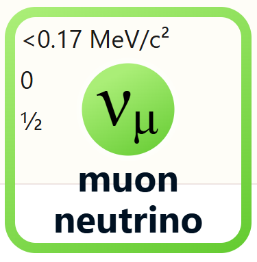

< Back
The muon neutrino is one of the three types of neutrinos in the Standard Model of particle physics.

Muon neutrinos are produced in muon decay and are involved in various particle interactions. Interestingly, neutrinos 'cycle' through the three types during their lifetimes.